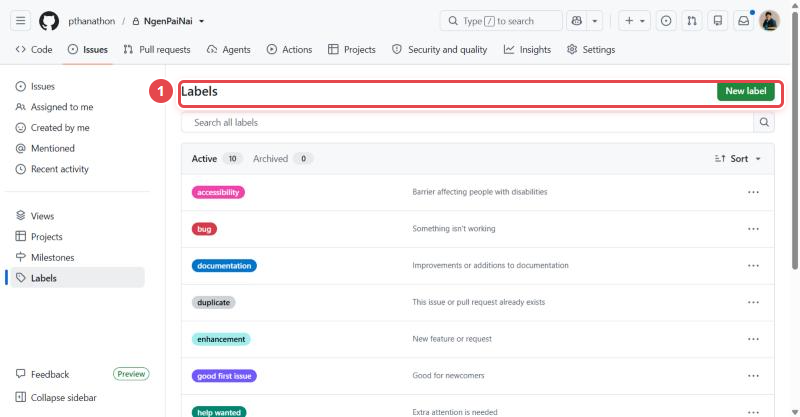
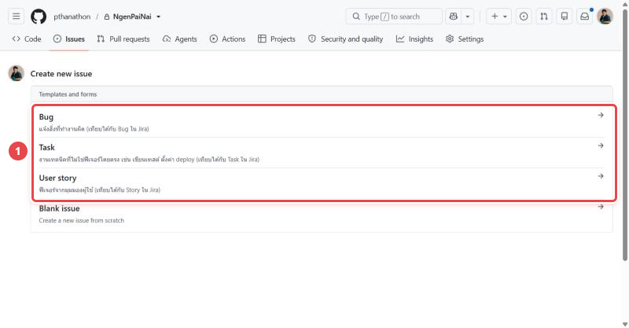
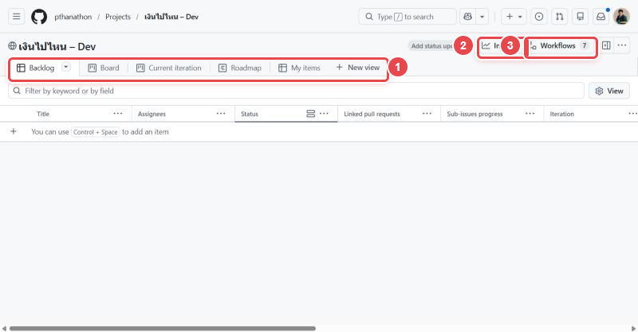
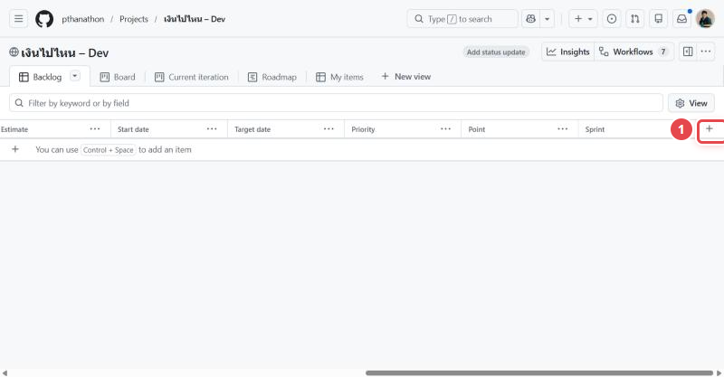
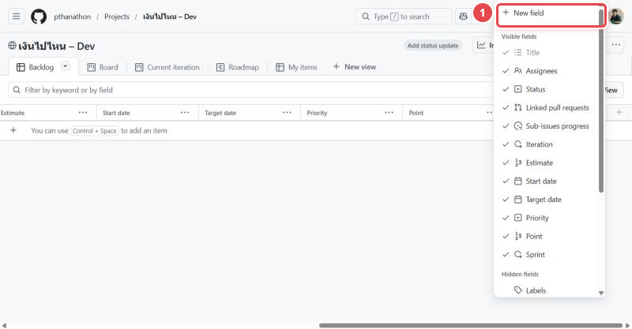
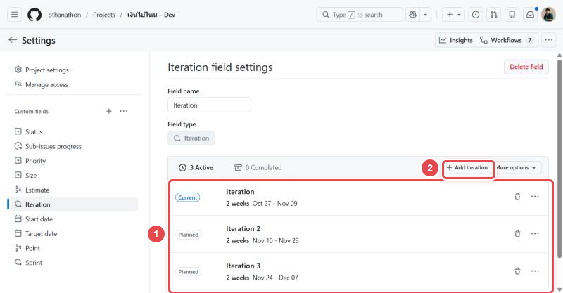
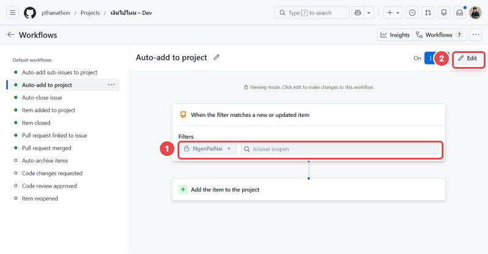
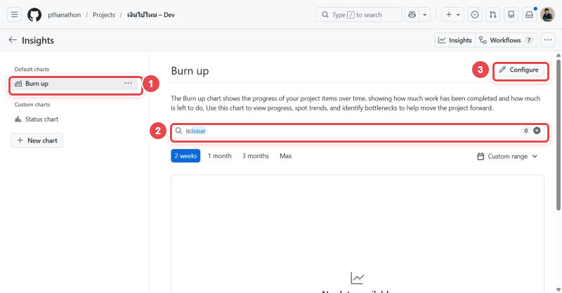
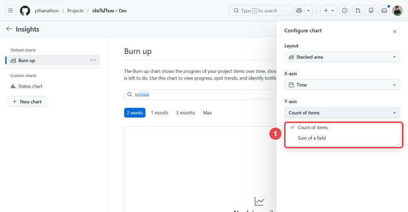

เปิดหน้า Labels ของ repo
เปิดหน้านี้ ↗
- กด New label เพื่อสร้าง label ใหม่ ตอนนี้ยังไม่มี
story,taskและepic(มีแค่bug)
คู่มือแบบภาพ 18 ขั้น ภาพทุกภาพถ่ายจากหน้าจอ GitHub จริงของ Project เงินไปไหน – Dev เมื่อ 28 ต.ค. 2569 เลขในวงกลมแดงในภาพตรงกับเลขในคำอธิบายใต้ภาพ
| Jira | GitHub | หมายเหตุ |
|---|---|---|
| Project / Board | Project | Project เดียวดึง issue จากหลาย repo ได้ |
| Epic | Parent issue + sub-issues | issue แม่แสดงความคืบหน้าของ sub-issue ให้เอง |
| Story / Task / Bug | Issue + label + template | Issue types ของจริงมีเฉพาะ repo ใน organization |
| Story points | ฟิลด์ Estimate (Number) | template Team planning มีให้แล้ว |
| Sprint | ฟิลด์ Iteration | template ตั้งไว้ sprint ละ 2 สัปดาห์ |
| Backlog | view ตารางที่กรอง no:iteration | |
| Sprint board | view Board กรอง iteration:@current | |
| Fix version | Milestone | |
| Component | Label | |
| Burndown | Insights → Burn up | ไม่มี burndown ในตัว ใช้ burn up แทน (ขั้นที่ 17–18) |
ทำครั้งเดียว ก่อนเริ่มสร้าง issue

story, task และ epic (มีแค่ bug)
storytask และ epicissue template ของ repo นี้ติด label ให้อัตโนมัติ แต่จะติดได้ก็ต่อเมื่อ label นั้นมีอยู่แล้ว
เทียบได้กับปุ่ม Create ใน Jira


[Story] แล้วกรอก user story กับ acceptance criteria ด้านล่างstory ให้เองProject นี้สร้างจาก template "Team planning" ฟิลด์และ view ส่วนใหญ่จึงมีให้แล้ว


ตอนนี้มี Point ซ้ำกับ Estimate และ Sprint ซ้ำกับ Iteration ควรเลือกใช้อย่างละตัว คู่มือนี้ใช้ Estimate เป็น story points และ Iteration เป็น sprint ถ้าไม่ใช้ Point กับ Sprint ลบได้ที่หน้านี้ (คลิกชื่อฟิลด์ → Delete field)





ใช้ filter กับ view จัดงาน

no:sprint ตามฟิลด์ Sprint ถ้าใช้ Iteration ให้พิมพ์ no:iteration จะได้ product backlog (งานที่ยังไม่อยู่ใน sprint ไหน)| filter | ได้อะไร |
|---|---|
no:iteration | งานที่ยังไม่อยู่ใน sprint (backlog) |
iteration:@current | งานใน sprint ปัจจุบัน |
iteration:@next | งานที่วางไว้ sprint หน้า |
-status:Done | ซ่อนงานที่เสร็จแล้ว |
label:bug | เฉพาะ bug |

iteration:@current จะเห็นเฉพาะงานใน sprint นี้ให้การ์ดย้ายสถานะเองเมื่อปิด issue หรือ merge PR


is:issue is:open)label:story,task,bugใช้แทน burndown ของ Jira

iteration:@current เพื่อดูเฉพาะ sprint นี้ ส่วนที่เป็น Open คือ "งานคงเหลือ" ซึ่งให้ข้อมูลเดียวกับ burndown
GitHub ไม่มี burndown แบบมีเส้นอุดมคติให้ในตัว ถ้าทีมต้องการจริงๆ ต้องใช้เครื่องมือเสริม หรือเขียน GitHub Action ดึงข้อมูลมาวาดเอง
ใส่ในฟิลด์ Estimate เป็นตัวเลขบอกขนาดงานเมื่อเทียบกับงานอื่น ไม่ใช่จำนวนชั่วโมง ชุด 1, 2, 3, 5, 8, 13 (Fibonacci) ห่างกันขึ้นเรื่อยๆ เพราะงานยิ่งใหญ่ยิ่งประเมินไม่แม่น
| แต้ม | ความหมาย | ตัวอย่างจาก backlog |
|---|---|---|
| 1 | งานเล็กมาก รู้ชัดว่าต้องทำอะไร | B1 เปิด GitHub Pages |
| 2 | งานเล็ก | B2 เพิ่ม manifest กับไอคอน |
| 3 | งานกลาง ตรงไปตรงมา | A1 ตั้งเป้าเก็บเงินในเมนู |
| 5 | งานกลาง มีหลายส่วน | A2 แสดงความคืบหน้าเป้าในหน้าแรก |
| 8 | งานใหญ่ หรือยังมีจุดที่ไม่แน่ใจ | C3 เพิ่มหรือแก้หมวดเองได้ |
| 13 | ใหญ่เกินไป ควรแตกเป็นหลาย story ก่อน | – |
งานจริงของแอปนี้ สร้างเป็น issue ตามขั้นที่ 3–4 ทำเสร็จแล้วปิดได้จริง กราฟจะได้มีข้อมูล
Epic A: เป้าเก็บเงิน
| # | ชนิด | ชื่อ | Estimate | Priority |
|---|---|---|---|---|
| A1 | Story | ตั้งเป้าเก็บเงินต่อเดือนในเมนู ⋯ | 3 | P1 |
| A2 | Story | แสดงความคืบหน้าเป้าเก็บเงินในหน้าแรก | 5 | P1 |
| A3 | Story | สรุปท้ายเดือนว่าเก็บได้ตามเป้าไหม | 2 | P2 |
Epic B: ใช้บนมือถือเหมือนแอปจริง
| # | ชนิด | ชื่อ | Estimate | Priority |
|---|---|---|---|---|
| B1 | Task | เปิด GitHub Pages ให้แอปมีลิงก์เข้าใช้จากมือถือ | 1 | P0 |
| B2 | Story | เพิ่ม web app manifest และไอคอน | 2 | P1 |
| B3 | Story | ใช้งานออฟไลน์ด้วย service worker | 5 | P2 |
| B4 | Bug | ตรวจว่าคีย์บอร์ดมือถือบังปุ่ม "บันทึก" หรือไม่ | 2 | P0 |
Epic C: จดเร็วขึ้น
| # | ชนิด | ชื่อ | Estimate | Priority |
|---|---|---|---|---|
| C1 | Story | ปุ่มรายการที่จดบ่อย แตะครั้งเดียวจดได้ | 5 | P1 |
| C2 | Story | ค้นหารายการจากบันทึกช่วยจำ | 3 | P2 |
| C3 | Story | เพิ่มหรือแก้ชื่อหมวดเองได้ | 8 | P2 |
Epic D: คุณภาพโค้ด
| # | ชนิด | ชื่อ | Estimate | Priority |
|---|---|---|---|---|
| D1 | Task | unit test ให้ parseAmount และการคำนวณงบ | 3 | P1 |
| D2 | Task | GitHub Actions รันเทสต์ทุกครั้งที่ push | 2 | P2 |
รวม 12 งาน 41 แต้ม ตัวอย่าง sprint แรก (2 สัปดาห์): B1 + B4 + A1 + B2 + D1 = 11 แต้ม
Closes #12) และการ์ดย้ายไป Done เองควรลองกับ organization จริงของทีมก่อนตัดสินใจด้วย เพราะบางฟีเจอร์ เช่น issue types และจำนวน workflow ขึ้นกับแผนที่ทีมใช้